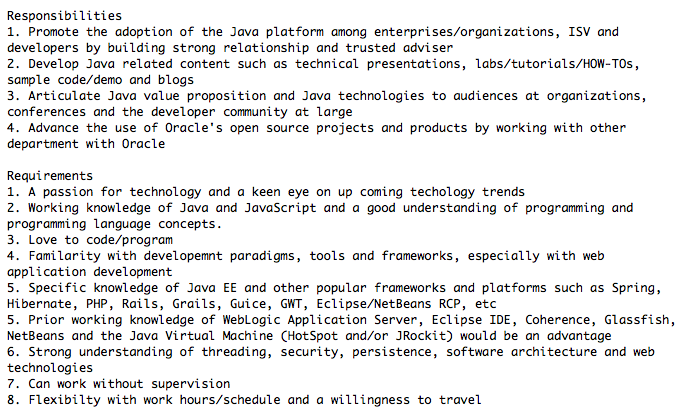

这个不错，买书就得买经典的。一些粗制滥造的书，读着难受，放家里占地方，扔了又会心疼购书的花费。@谢工在图灵和GitChat:图灵淘宝官方商城五一节后即将开业：网页链接，此图书商城不为卖书挣钱，只为那些断货和绝版的书留个活路。今后大家要看的数学、通信、电子、计算机、科普等国外的经典教材和原版书，我们陆续都会上传上来。开业第一个月买一赠一。欢迎你来小店坐坐，正在上传图书信息中。
[ 招聘 ] 有同事要招Java Evangelist(Java技术传教士)，在一个全球性的部门工作，需要经常出差，适合喜欢全球旅行的技术人士。要求：Java编程经验，快速掌握新技术，并开发出demo, 演讲技能佳，喜写技术文档更佳，中英文流利，城市不限。更具体的要求看大图。有兴趣给我发邮件。ada.l.li@oracle.com 
有开发背景的人，经过一段时间培训和磨练，基本都能胜任。这个工作要是希望做得长些，做得好些，还是看兴趣，是不是对技术有兴趣，是不是有点好为人师的潜质，是不是有好奇心。 //@JamesHao:这个要求很高呀。@Ada李力:[ 招聘 ] 有同事要招Java Evangelist(Java技术传教士)，在一个全球性的部门工作，需要经常出差，适合喜欢全球旅行的技术人士。要求：Java编程经验，快速掌握新技术，并开发出demo, 演讲技能佳，喜写技术文档更佳，中英文流利，城市不限。更具体的要求看大图。有兴趣给我发邮件。ada.l.li@oracle.com
姣姣班上的家长们那叫一个积极, 老师发短信征求五名学校运动会的志愿者, 我还正考虑要不要报名。老师的第二封短信就来了，说已经报满了，没报上的家长不要发短信了，也就五分钟的功夫！不是第一次出现这现象，我只能感慨，看起来姣姣班上有豪多全职妈妈。
以后碰到头衔为"架构师"的人, 有机会的话我一定会问一个问题:"您是怎么成为架构师的?". 我对这个话题感兴趣已久. 最早是问过一个同事, 他回答得也莫名其妙:"我在这家公司做了十年, 就promote成了架构师.". 这种答案太不具有参考价值, 我认识的人中, 能在一家公司干十年的人, 寥寥可数.
 网页链接，此图书商城不为卖书挣钱，只为那些断货和绝版的书留个活路。今后大家要看的数学、通信、电子、计算机、科普等国外的经典教材和原版书，我们陆续都会上传上来。开业第一个月买一赠一。欢迎你来小店坐坐，正在上传图书信息中。
网页链接，此图书商城不为卖书挣钱，只为那些断货和绝版的书留个活路。今后大家要看的数学、通信、电子、计算机、科普等国外的经典教材和原版书，我们陆续都会上传上来。开业第一个月买一赠一。欢迎你来小店坐坐，正在上传图书信息中。